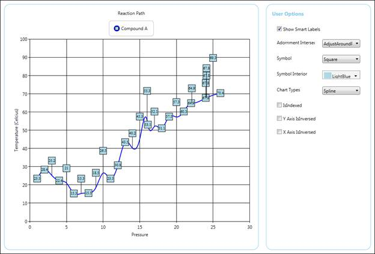
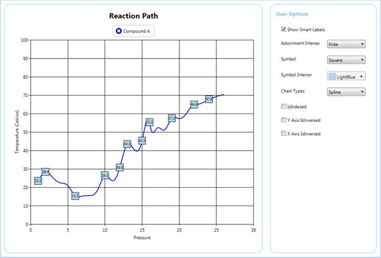
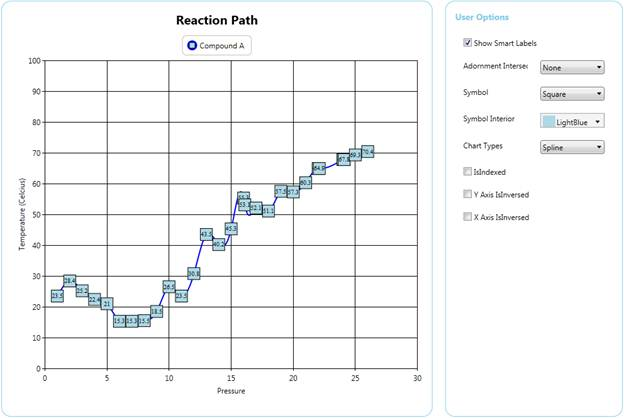

Essential Chart ships with the enhancement of smart labels support to avoid the overlapping of adornment labels using the enum property AdornmentIntersectAction. The following actions can be taken when labels overlap:
· Hide
· AdjustAroundPoints
· None
Advantage of Using Smart Labels
1. Avoids the overlap of segment labels.
2. To view the label clearly and place the labels around the data points.
3. Additional connector lines are shown between a label and its corresponding chart point.
Properties
|
Property |
Description |
Type |
Data Type |
|
ShowSmartLabels |
Sets the smart labels for the series. |
Dependency Property |
Boolean |
|
AdornmentIntersectAction |
Sets the intersect action for the adornments. |
Dependency Property |
Enum |
Sample Link
1. Open the WPF sample browser.
2. Select the Chart control from the sample browser.
3. Chart > Smart Labels > Smart Label Demo.
Adding Smart Labels Support to an Application
The following code samples are used to add smart labels to the chart series.
|
[XAML]
<sync:ChartSeries x:Name="series2" AdornmentIntersectAction="AdjustAcrossPoints" ShowSmartLabels="True" > <sync:ChartSeries.AdornmentsInfo> <sync:ChartAdornmentInfo x:Name="adorn" Visible="True" Symbol="Square" SymbolHeight="20" SymbolWidth="20" SymbolInterior="LightBlue" /> </sync:ChartSeries.AdornmentsInfo> </sync:ChartSeries>
|
|
[C#] series.ShowSmartLabels = true; series.AdornmentIntersectAction = AdornemntIntersectActions.AdjustAcrossPoints;
|

Figure 111: Adornment Intersect Action Set as AdjustAroundPoints
The following code samples are used to add smart labels to the chart series with intersect action set to Hide.
|
[XAML]
<sync:ChartSeries x:Name="series2" AdornmentIntersectAction="Hide" ShowSmartLabels="True" > <sync:ChartSeries.AdornmentsInfo> <sync:ChartAdornmentInfo x:Name="adorn" Visible="True" Symbol="Square" SymbolHeight="20" SymbolWidth="20" SymbolInterior="LightBlue" /> </sync:ChartSeries.AdornmentsInfo> </sync:ChartSeries>
|
|
[C#] series.ShowSmartLabels = true; series.AdornmentIntersectAction = AdornemntIntersectActions.AdjustAcrossPoints; |

Figure 112: Adornment Intersect Action Set as Hide
The following code samples are used to add smart labels to the chart series with intersect action set to Hide.
|
[XAML]
<sync:ChartSeries x:Name="series2" AdornmentIntersectAction="None" ShowSmartLabels="True" > <sync:ChartSeries.AdornmentsInfo> <sync:ChartAdornmentInfo x:Name="adorn" Visible="True" Symbol="Square" SymbolHeight="20" SymbolWidth="20" SymbolInterior="LightBlue" /> </sync:ChartSeries.AdornmentsInfo> </sync:ChartSeries>
|
|
[C#] series.ShowSmartLabels = true; series.AdornmentIntersectAction = AdornemntIntersectActions.None; |

Figure 113: Adornment Intersect Action Set as None